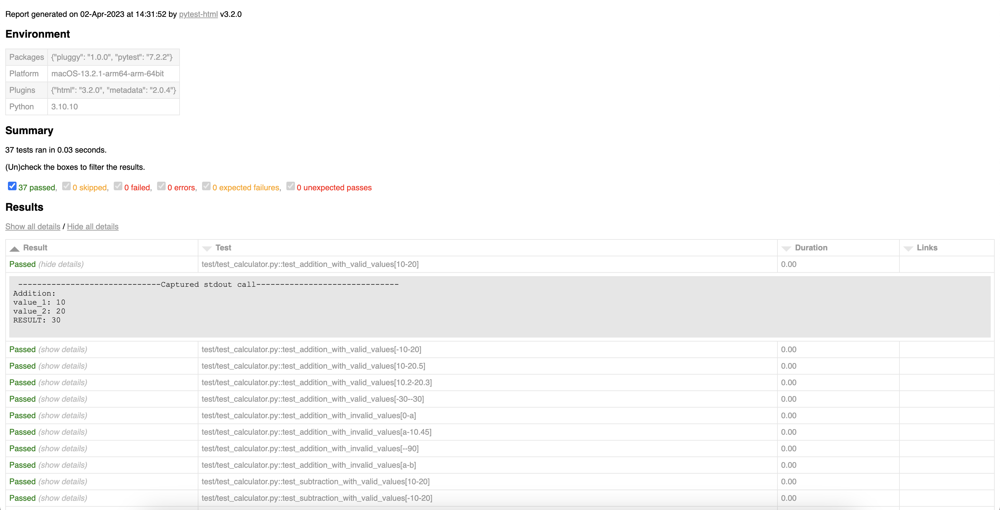
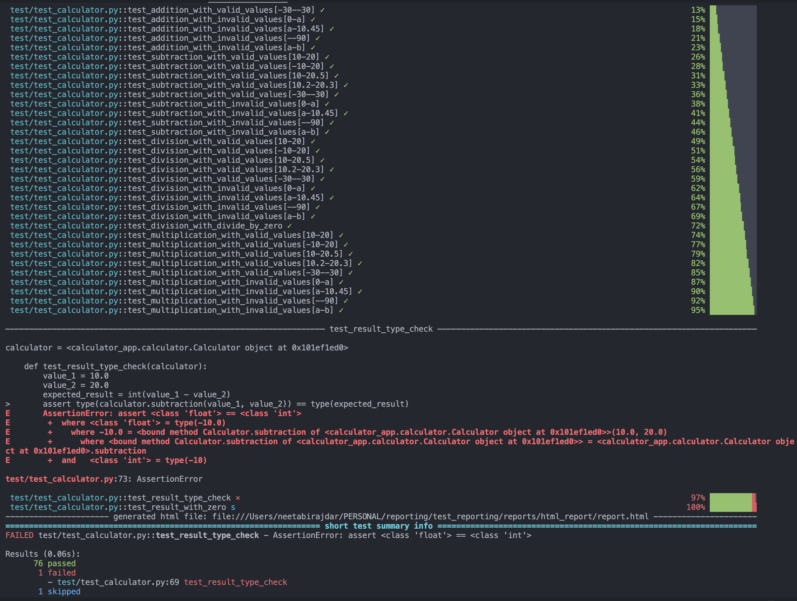
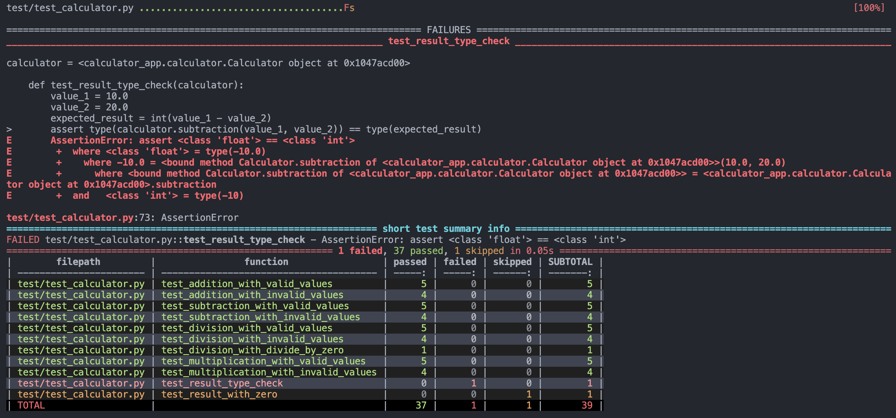
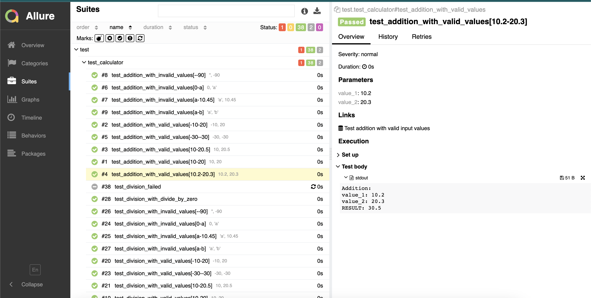

Test Report With Pytest
Posted on April 2, 2023 • 2 minutes • 353 words
What is Test Report?
Test reporting is always important part of testing. It provides an overview of which testcases are working, which ones are failing and details like what happened if logged or printed.
Calculator Example:
Use the following example for test reporting: Calculator App: https://github.com/neetaBirajdar/test_reporting
Test Report with Pytest
pytestis a very well known testing framework used in python test world.- There are multiple options for reporting that can be used along with Pytest to make the results easy to read and understand.
pytest-html Report:
-
pytest-htmlis a plugin for pytest that generates a HTML report for test results. -
Run the example tests with html-report:
pip install pytest-html
- Run the example from the repo with the
pytest-html:
pytest test/test_calculator.py --html=reports/html_report/report.html
-
Check the result in
/test_reporting/reports/html_report/report.html -
Pass Report: Open that report.html on browser, you can see this: 
-
Failed details Report: If any testcase failed or is skipped, as shown here:

pytest-sugar Report:
-
Pytest-sugar is a plugin for pytest that shows failures and errors instantly and
shows a progress bar. -
Install
pytest-sugar:
pip install pytest-sugar
- Run the example from the repo:
Note: Add
-vfor detailed view
pytest test/test_calculator.py -v
-
Pass Report:

-
Failed details Report: If any testcase failed, instant details are given: 
pytest-md Report:
-
pytest-md-report : A pytest plugin to make a test results report with Markdown table format.
-
Install
pytest-md-report:
pip install pytest-md-report
- Run the example from the repo:
Note: Add
--md-report-verbose=1for detailed view
pytest test/test_calculator.py --md-report --md-report-verbose=1
-
Pass Report:

-
Failed details Report: Testcases which are skipped, failed, passed are shown in a list. Including the error message: 
Allure Report:
-
Allure Framework is a flexible lightweight multi-language test report tool that not only shows a very concise representation of what have been tested in a neat web report form.
-
Install
Allurevia requirement.txt:
pip install -r requirements.txt
- Run the example from the repo:
pytest test/test_calculator.py --alluredir=allure_report
- Generate Allure report:
allure serve allure_report

-
Pass Report: 
-
Failed details Report: Testcases which are skipped, failed, passed are shown in a list. Including the error message:

Hope you find this helpful 😃. Stay tuned for more.